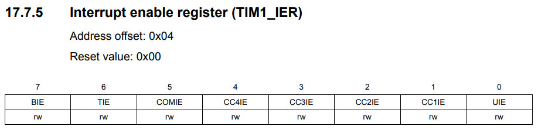
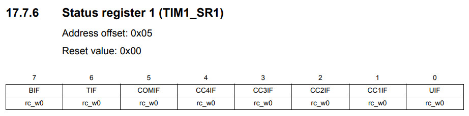
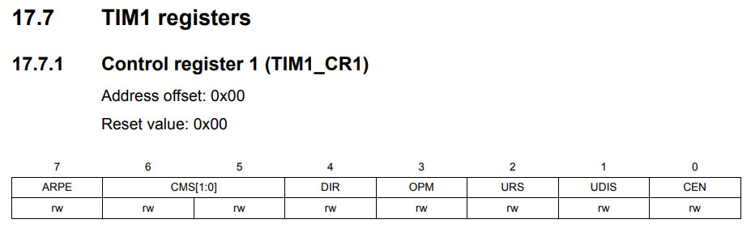
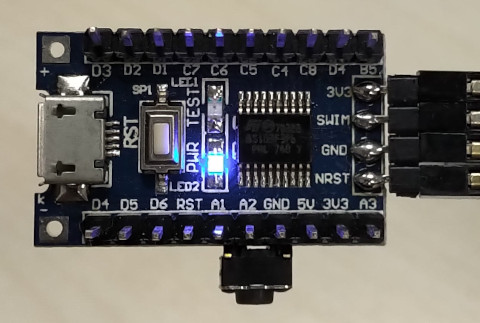

參考資訊：
https://programmer.group/stm8s-timer-basic-interrupt-timing.html
暫存器



.equ PB_ODR, 0x5005
.equ PB_IDR, 0x5006
.equ PB_DDR, 0x5007
.equ PB_CR1, 0x5008
.equ PB_CR2, 0x5009
.equ TIM1_PSCRH, 0x5260
.equ TIM1_PSCRL, 0x5261
.equ TIM1_ARRH, 0x5262
.equ TIM1_ARRL, 0x5263
.equ TIM1_CR1, 0x5250
.equ TIM1_IER, 0x5254
.equ TIM1_SR1, 0x5255
.equ TIM1_CNTRH, 0x525e
.equ TIM1_CNTRL, 0x525f
.area data
.area sseg
.area home
int main
int 0
int 0
int 0
int 0
int 0
int 0
int 0
int 0
int 0
int 0
int 0
int 0
int timer1_handler
.area cseg
main:
mov PB_DDR, #0x20
mov PB_CR1, #0x20
mov TIM1_PSCRH, #0x00
mov TIM1_PSCRL, #0x00
mov TIM1_ARRH, #0xff
mov TIM1_ARRL, #0xff
mov TIM1_CNTRH, #0x00
mov TIM1_CNTRL, #0x00
mov TIM1_IER, #0x01
mov TIM1_SR1, #0x01
mov TIM1_CR1, #0x91
rim
loop:
jp loop
timer1_handler:
mov TIM1_SR1, #0
bcpl PB_ODR, #5
iret
完成
